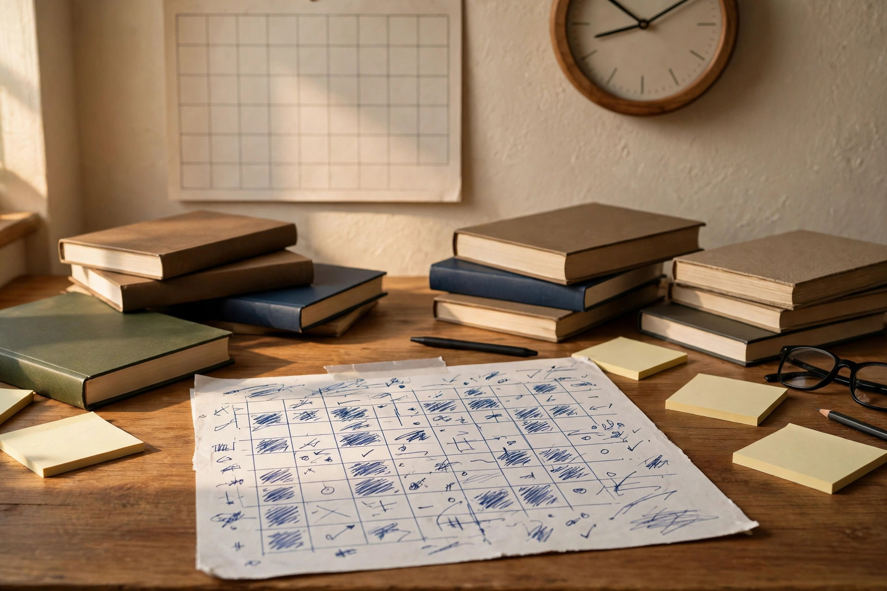
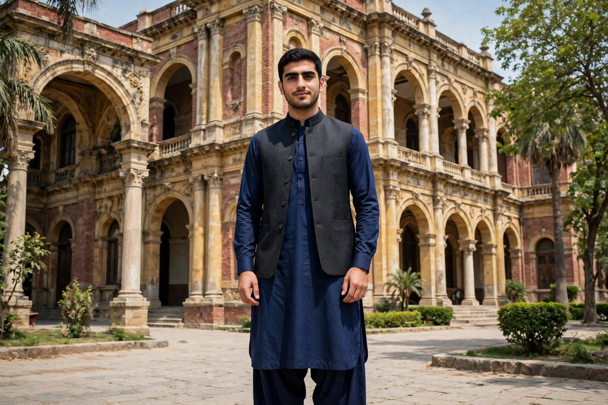

Of all PPSC exams, PMS changes lives most completely. One selection puts you into the Provincial Management Service at BS-17 — the officer cadre running Punjab's districts and departments. The competition is serious, the syllabus wide, and the pattern has now changed.
Advertisement No. 12/2026 announced a restructured Combined Competitive Examination (CCE) — the exam everyone calls PMS — with a new paper scheme, a reasoning test, a bigger interview and a higher age limit. This guide explains the new pattern, the syllabus, who can apply, and how to prepare in 90 days.
Warning first: the fine print lives in the official advertisement. Read it on ppsc.gop.pk — details below follow Advertisement No. 12/2026 as reported.
What Is the PMS Exam?
PMS stands for Provincial Management Service — Punjab's provincial civil service exam, run by PPSC through the Combined Competitive Examination (CCE). Successful candidates enter provincial service at BS-17.
Advertisement No. 12/2026 announced 48 BS-17 posts: 45 PMS officers in the Services & General Administration Department, 1 Excise & Taxation Officer, and 2 Assistant Directors Local Fund Audit.
PMS is CSS's provincial sibling: both recruit you into the civil service itself — CSS is federal, PMS is Punjab-only. Our CSS vs PMS vs PPSC comparison lays out the trade-offs, but it was written before this pattern change.
The New PMS Pattern 2026: What Changed
The old written exam was 1,200 marks — six compulsory papers of 100 each, plus three optionals of 200 each. The new scheme keeps the 1,400 total:
- Compulsory papers: 6 papers (600 marks) → 10 papers (1,000 marks)
- Optional subjects: 3 subjects (600 marks) → 1 subject (100 marks)
- Written total: 1,200 marks → 1,100 marks
- Interview / viva voce: 200 marks → 300 marks
- New: a Mental Ability & Reasoning Test (MART), Pakistan Studies split in two, and papers in International Affairs and Economy & Development
The message is clear: optionals no longer decide merit. Under the old scheme one high-scoring optional could swing 100+ marks; now 1,000 of 1,100 written marks are compulsory.
The 11 Papers: PMS Syllabus 2026
- Paper I — General Knowledge (100): MCQ paper, 0.25 negative marking.
- Paper II — Mental Ability & Reasoning Test, MART (100): MCQ paper, 0.25 negative marking; reasoning and comprehension; 33% qualifying bar.
- Paper III — English Essay (100): subjective; one ~1,500-word essay.
- Paper IV — English Précis & Composition (100): subjective; précis, comprehension, grammar, translation.
- Paper V — Urdu (100): subjective; essay, précis, comprehension, grammar, translation.
- Papers VI–X (100 each): hybrid, 25 MCQ + 75 subjective: Islamic Studies/Ethics, Pakistan Studies I & II, International Affairs, Economy and Development.
- Paper XI — One Optional Subject (100): subjective; one of 30 approved subjects.
Note the hybrid rule: in Papers VI–X, 25 marks are MCQ and 75 subjective — 125 written marks are objective. Practise with General Knowledge MCQs, Pakistan Studies MCQs and English MCQs, and our PMS test page.

Eligibility: Who Can Apply for PMS 2026?
- Qualification: bachelor's degree (second division), HEC-recognised university.
- Domicile: Punjab; male, female and transgender candidates can all apply.
- Age limit (general): 21 to 32 years — raised from 30 for the 2026–27 cycles (S&GAD notification, 2 October 2026). Cut-off: 1 January 2027.
- Government servants: up to 35 years, with 4+ years of service.
- Attempts: maximum 4, up from 3.
- Attendance rule: appear in every paper — missing one disqualifies you from the rest.
Your degree and domicile must be complete by the closing date, and your optional subject and centre cannot be changed after submission.
Qualifying Marks: What Score Gets You to the Interview?
- MART (Paper II): at least 33% (may be revised later).
- Every other written paper: at least 40% (40 out of 100).
- Aggregate: at least 50% — 550 out of 1,100 — to qualify for the interview.
- Interview: at least 50% — 150 out of 300 — to make the final merit list.
- Negative marking: 0.25 per wrong answer in GK and MART.
40% is the floor, not the target. With 48 posts and thousands of applicants, real merit sits far above the qualifying line — aim for 60%+ written.
Subject-Wise Preparation Strategy
English Essay & Précis
Two hundred marks of English decide more merit than any other pair of papers. Outline one essay a week and write it in full. For précis, cut passages to a third.
Urdu
Urdu carries the same 100 marks as English, but most aspirants give it a fraction of the time. Practise essay writing, précis and translation.
General Knowledge & MART
Two hundred marks of pure MCQ — the most trainable part of the exam. GK rewards cluster revision; MART rewards timed practice. Both carry negative marking: guess only when you can eliminate two options.
Pak Studies, International Affairs & Economy
These four papers are the heart of the new pattern — 400 marks, each part MCQ and part subjective. Follow the last 12 months for International Affairs; master the budget, NFC award and inflation. Revise facts with Current Affairs MCQs.
Islamic Studies
The Quran, Seerah, Ghazwat, Khulfa-e-Rashideen and Fiqh return in every paper. Two weeks of steady revision secures most of the 25 MCQ marks. Practise with Islamiat MCQs.
Your one optional
With one optional worth 100 marks, hunting for a "scoring" subject is over. Pick what you know best — your degree subject.

Your 90-Day PMS Study Plan
- Days 1–14: Foundation. One reading pass of Pak Studies, Islamiat, International Affairs and Economy. 50 GK and reasoning MCQs daily. First two essays.
- Days 15–35: Volume. 150+ mixed MCQs daily. One essay and two précis a week.
- Days 36–60: Past papers and mocks. Recalled PMS and CSS papers. Three timed MCQ mocks. Start an error notebook.
- Days 61–80: Writing under pressure. Two timed essays a week. Hybrid-paper practice: 25 MCQs plus one subjective answer per sitting.
- Days 81–90: Simulation. Full mocks on our exam simulator. Final 3 days: error notebook and short notes only.
5 Mistakes That Cost Aspirants Their Selection
- Preparing for the old pattern. The 6+3 scheme is gone — rebuild around the ten compulsory papers.
- Ignoring MART. Its 33% bar is a gate.
- Reading instead of writing. Six papers are descriptive.
- Leaving the interview to the end. At 300 marks it is worth three written papers.
- No timed practice. Knowledge without speed fails MCQs; without structure, essays.
- New CCE pattern: 10 compulsory papers (1,000) + 1 optional (100) = 1,100 written, plus a 300-mark interview.
- MART and the four hybrid papers are where this cycle is won.
- Eligibility: bachelor's (2nd division), Punjab domicile, age 21–32, up to 4 attempts.
- Qualifying bars: 33% MART, 40% per paper, 50% aggregate, 50% interview — real merit needs much more.
- Most hours to compulsory papers; essays weekly; MCQs timed.
Frequently Asked Questions
What is the PMS exam pattern in 2026?
1,100 marks written: 10 compulsory papers of 100 each plus one 100-mark optional; a 300-mark interview follows — 1,400 total. Confirm on ppsc.gop.pk.
What is the age limit for PMS 2026?
21 to 32 years for general candidates; up to 35 for government servants with 4+ years of service. Cut-off: 1 January 2027.
How many attempts are allowed in PMS?
Up to 4 attempts — raised from 3 in earlier cycles.
Is there negative marking in the PMS exam?
Yes — in GK (Paper I) and MART (Paper II), 0.25 marks per wrong answer. Hybrid papers carry MCQs too; check your advertisement.
Start practicing — free, no login needed
195,450+ MCQs · solved past papers · real exam simulator with timer & negative marking